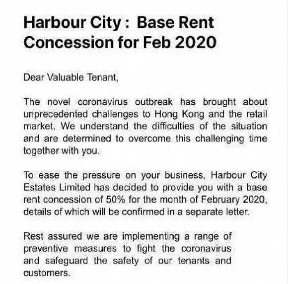
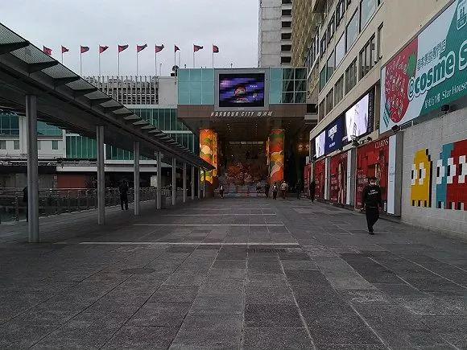

两个贫困县的艰难战“疫”
原文链接 备份链接 澎湃新闻记者 何利权 实习生 粟满莺 李佳悦 因缺乏物资，都安县医护人员自制防护用品。 因新冠肺炎确诊患者在短期内陡增，且感染人数占到所在市（州）的绝大部分，个别位置偏僻的贫困县正面临着一场艰难的“战疫”。 截至2 …
来源：图虫
记者：卢奕贝 编辑：牙韩翔
“
但对经历了去年大半年的社会局势动荡，又遭遇肺炎疫情雪上加霜的香港零售行业来说，减免租金只是杯水车薪。
”
疫情之下，香港最大的高端购物中心、亚洲最赚钱的商城海港城，也开始减租了。
2月12日，多家香港媒体报道称，海港城给租户的一封内部邮件显示，受新冠肺炎疫情影响，商场客流量骤减，多个品牌商家业绩受到严重影响。为减缓商户压力，海港城决定将2月租金减半。由于涉及与租户间的保密条款，海港城未透露更加具体的洽谈内容和合约安排。
根据国家卫健委数据，截至2月13日19:55时，香港地区累计确诊新型冠状病毒肺炎51例。

海港城是香港零售业的标志之一。自2007年起的10年间，受益内地游客的访港购物热潮，海港城销售额年均复合增长率超过10%，2018年更是达到24%。
2018年海港城销售额超过370亿元港元，平均每天超过一亿元港元。到2019年，海港城去年上半年总收入依然增长5%至61.56亿港元，商场的出租率维持在96%。
目前，海港城内有许多商铺闭店暂停营业，其中围上了装修板的门面更多达24个。
一位名叫“Patrick the Reporter”的香港用户，在社交网络Twitter上发布了一张海港城的照片，并且配文“2020.02.06 平日下午的海港城。”曾经人流涌动的海港城入口，如今格外空旷。

网友拍摄的海港城。
“受疫情影响，大家都有意减少了出门聚会，但上班族仍然需要搭乘公共交通出行，许多必经站点会设在商场楼下，经过是不可避免的，其实，逛街还是可以的。”在香港尖沙咀附近工作的Hugo Wong对界面新闻说。虽然所有香港市民都戴上了口罩，但是街道上的人流并没有明显减少。
但香港奢侈品零售业的最大消费客群来自内地，为应对疫情，香港政府自2020年2月4日起加强了对出入境的管控，访港旅客人次跌至谷底。
2019年香港局势影响的冲击尚未消化，新冠肺炎又来临，如今的购买力可能并不足以支撑它们过往的辉煌。
海港城的母公司是九龙仓置业，旗下还拥有时代广场、荷里活广场以及中环组合等5项物业，目前并没有其他减租信息。但在新冠肺炎尚未爆发以前，全球最大奢侈品牌之一的Louis Vuitton，由于业主九龙仓置业拒绝为品牌位于香港铜锣湾时代广场2楼的分店减租，正计划关闭该分店。
新冠肺炎疫情爆发后，不只奢侈品，香港的化妆品与珠宝行业也变得黯淡。
莎莎已经宣布旗下香港及澳门21间分店已暂时停止营业；周大福表示港澳有40多间分店暂停营业，其余分店也已经缩短营业时间；谢瑞麟则在社交平台公布，已停止超一半的香港门店营业。
目前暂停营业的零售门店在香港仍是少数，但香港零售行业人士不再报以乐观。
据香港零售管理协会上周四公布的调查显示，自1月24日起共10天的春节期间，大部分香港零售商的平均生意额下跌高至50%，零售业正步入“超级寒冬”。而在新冠病毒疫情肆虐下，协会会员预计2至3月的生意额仍会下跌40%至60%。
零售寒冬让香港各界决定守望相助。
2月11日，香港地产建设商会发布了一份声明，指出鉴于零售餐饮业当前的困难境况，旗下会员将继续与有需要租户按个别情况探讨各种可行办法，包括提供宽减租金等措施，以纾缓他们的经营压力。
新鸿基地产、新世界集团、恒隆地产和太古地产纷纷响应，或减免租金，或承诺加强推广，以携手共度时艰。而这些地产公司的减免措施，将覆盖国际金融中心商场、apm、K11、太古广场购物商场等香港核心商场。
但对经历了去年大半年的社会局势动荡，又遭遇肺炎疫情雪上加霜的香港零售行业来说，减免租金或许杯水车薪。
未经授权 禁止转载

原文链接 备份链接 澎湃新闻记者 何利权 实习生 粟满莺 李佳悦 因缺乏物资，都安县医护人员自制防护用品。 因新冠肺炎确诊患者在短期内陡增，且感染人数占到所在市（州）的绝大部分，个别位置偏僻的贫困县正面临着一场艰难的“战疫”。 截至2 …
原文链接 备份链接 *************▲*************2月2日，武汉大学中南医院影像科主任徐海波教授（白衣者）和同事查看患者的CT检查影像。 （新华社/图） 全文共1150字，阅读大约需要3分钟。 武汉确诊患者单日 …
原文链接 备份链接 在苏格兰格拉斯哥大学读书的几个中国留学生去超市购物的路上，一个当地老奶奶询问他们：“是中国来的学生吗？”当他们回答“是”之后，老奶奶说：“let me give you a hug（让我给你一个拥抱）”。 全文2275 …
原文链接 备份链接 【财新网】（记者 黄姝伦 方祖望）在广东，只要踏进发热门诊的大门，就要接受核酸检测，排查是否感染了新冠肺炎。2月12日，广东省疫情发布会上，省卫健委副主任陈祝生称，全省发热门诊启动患者核酸检测排查，范围扩大至全员。 …
原文链接 备份链接 如果你发现自己每天接触的关于疫情的信息，超过你每天接收总的信息量的40%，也就是说你大部分的时间都在接收这些信息，并且因此干扰到了自身情绪甚至日常生活，那么你要主动去做点别的事，尽可能把关注点转移到自己日常感兴趣的东 …